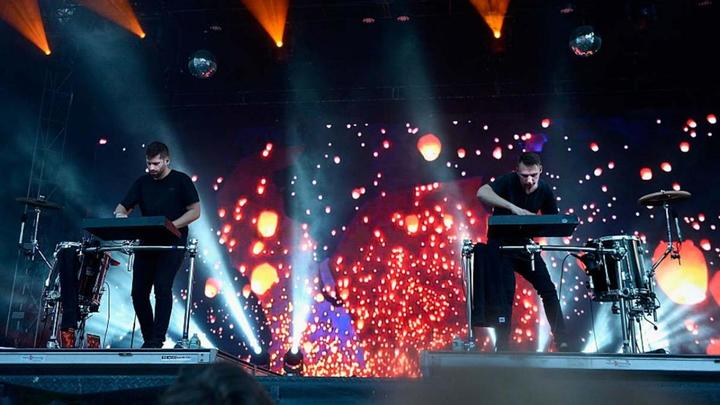

ODESZA (/oʊˈdɛsə/) is an American electronic music duo from Seattle consisting of Harrison Mills and Clayton Knight. The group was formed in 2012 shortly before Mills and Knight graduated from Western Washington University. ODESZA is coming to Seattle, Washington March 30 and 31st 2018. Their live perfomances are a wonderful experience and should be attended by everyone in the Seattle area. The band is coming back to thier roots and are sure to put on an exciting show! Click here for show info!
